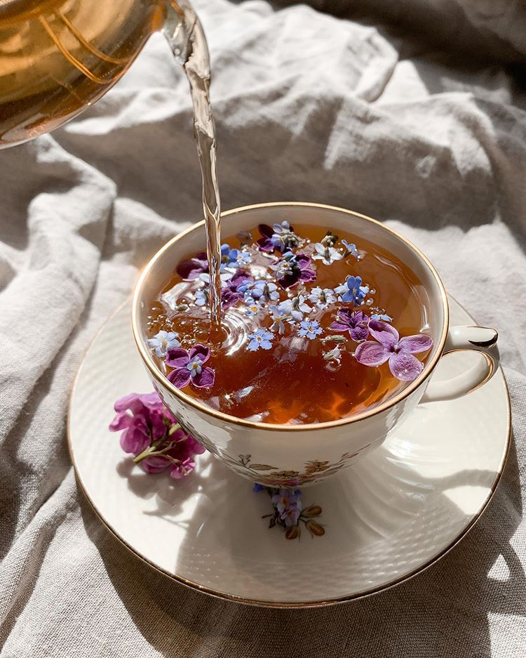

A cappuccino is the perfect balance of espresso, steamed milk and foam.
$4.25
Latte
A latte is a shot or two of bold, tasty espresso with fresh, sweet steamed milk over it.
$5.25
Mocha
A mocha is our signature sweet chocolate coffee topped with whipped cream.
$5.50
Cold Brew
A cold brew is handcrafted in small batches daily, slow-steeped in cool water for 20 hours, without touching heat.
$4.25
Americano
A americano is a caffeinated drink made with espresso and hot water.
$2.50

Tea
Chai Latte
A chai latte is black tea infused with cinnamon, clove and other warming spices is combined with steamed milk and topped with foam for the perfect balance of sweet and spicy.
$5.50
Matcha Latte
A matcha latte is smooth and creamy matcha sweetened just right and served with steamed milk.
$6.25
Seasonal Iced Tea
Our iced tea recipes mix fresh seasonal ingredients with our caffeinated green tea.